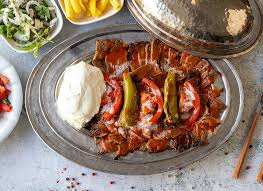
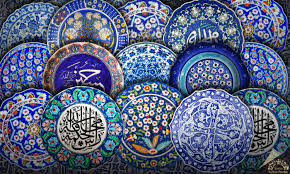
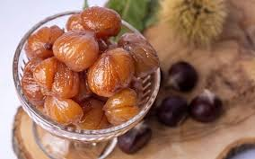

İskender Kebap
Bursa'nın dünya çapında tanınan lezzeti; döner eti, tereyağı, yoğurt ve özel sosla servis edilir.
Nüfus: ~3 milyon | Osmanlı'nın ilk başkenti
Bursa, Osmanlı Devleti'nin ilk başkenti olarak tarih boyunca önemli bir rol üstlenmiştir. Uludağ, tarihi çarşılar, camiler ve külliyelerle hem kültürel hem doğal zenginliği güçlü bir şehirdir.
Bursaspor 1963 yılında kurulmuştur. 2009-2010 sezonunda Süper Lig şampiyonu olarak Anadolu kulüpleri arasında unutulmaz bir başarıya imza atmıştır.

Ulu Camii, Yeşil Türbe, Koza Han ve Cumalıkızık Bursa'nın kültürel belleğini oluşturan en önemli miras noktalarıdır. Bu yapılar şehrin tarihini günümüze taşır.

Bursa'nın dünya çapında tanınan lezzeti; döner eti, tereyağı, yoğurt ve özel sosla servis edilir.

Şehrin simge tatlılarından biridir. Bursa kestanesinin şekerle buluştuğu geleneksel bir lezzettir.